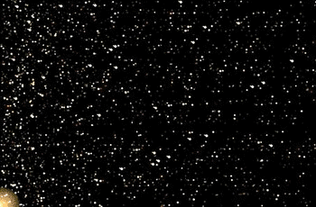

Le comete sono tra i corpi celesti più caratteristici e affascinanti, grazie alla loro lunga coda luminosa.
Esse hanno sempre affascinato e intimorito l'uomo per il loro aspetto e la loro improvvisa apparizione in cielo.
esse sono "palle di neve sporca", composte da rocce mescolate a gas congelati, acqua, metano, ammoniaca e polvere.
COME SI SONO FORMATE

Le comete provengono da un insieme di milioni e milioni di corpi rocciosi, detto "nube di Oort".
Questa nube, a forma di guscio sferico, si trova ai confini del Sistema Solare e si estende fino a
cinquantamila volte la distanza Terra-Sole.
Le comete si trovano nella nube di Oort fin da quando il Sistema Solare si è formato e si sono conservate uguali ad allora,
come in un grande "frigorifero cosmico". Ogni tanto, quando qualche cosa disturba la loro orbita, uno di questi pezzi di
roccia ghiacciata sfugge dalla nube e si avvicina al Sole a grande velocità. Esso entra in un'orbita molto allungata
e diventa una cometa.
Alcune comete percorrono un'orbita chiusa,
di forma ellittica, perciò si ripresentano periodicamente, mentre altre percorrono un'orbita aperta e quindi
passano solo una volta in prossimità del Sole.
Non appena la cometa si avvicina a poche centinaia di milioni di chilometri dal Sole,
 il ghiaccio che contiene incomincia a vaporizzare, formando attorno al nucleo roccioso una nube sferoidale di gas e polveri,
detta chioma.
In effetti, il nome "cometa" deriva dal latino "coma" che significa chioma.
Quando la cometa si avvicina a meno di due-trecento milioni di Km dal Sole,
la radiazione solare incide sulle particelle di polvere della chioma, esercita su di esse una pressione e
le spinge via lungo la direzione opposta al Sole. La polvere forma dunque una coda, rivolta dalla parte opposta del Sole.
La combinazione del moto della cometa e della spinta della radiazione fa sì che la coda assuma una forma leggermente arcuata.
La radiazione del Sole ionizza il gas della chioma, cioè strappa agli atomi del gas i loro elettroni.
Il gas diventa quindi un plasma, cioè un insieme di nuclei atomici e di elettroni liberi.
Anch'esso viene spinto via dalla pressione della radiazione solare, nella direzione opposta al Sole,
e forma una coda di ioni. Tuttavia, essendo più leggero della polvere, non "resta indietro" mentre la cometa si sposta:
la coda di ioni dunque è rettilinea. È questo il motivo per il quale si osservano due code separate nelle comete.
il ghiaccio che contiene incomincia a vaporizzare, formando attorno al nucleo roccioso una nube sferoidale di gas e polveri,
detta chioma.
In effetti, il nome "cometa" deriva dal latino "coma" che significa chioma.
Quando la cometa si avvicina a meno di due-trecento milioni di Km dal Sole,
la radiazione solare incide sulle particelle di polvere della chioma, esercita su di esse una pressione e
le spinge via lungo la direzione opposta al Sole. La polvere forma dunque una coda, rivolta dalla parte opposta del Sole.
La combinazione del moto della cometa e della spinta della radiazione fa sì che la coda assuma una forma leggermente arcuata.
La radiazione del Sole ionizza il gas della chioma, cioè strappa agli atomi del gas i loro elettroni.
Il gas diventa quindi un plasma, cioè un insieme di nuclei atomici e di elettroni liberi.
Anch'esso viene spinto via dalla pressione della radiazione solare, nella direzione opposta al Sole,
e forma una coda di ioni. Tuttavia, essendo più leggero della polvere, non "resta indietro" mentre la cometa si sposta:
la coda di ioni dunque è rettilinea. È questo il motivo per il quale si osservano due code separate nelle comete.
LA COMETA DI HALLEY
![mercurio]() La cometa di Halley è forse la più famosa cometa conosciuta.
Essa deve il suo nome a Sir Edmond Halley (1656-1742), astronomo inglese che la osservò nel 1682.
Egli confrontò l'orbita della cometa con quella di altre, osservate nel 1531 e nel 1607, scoprendo che erano simili.
Egli ipotizzò quindi che si trattasse dello stesso oggetto, che si ripresentava ad intervalli di 76 anni.
Dopo la sua morte, nel 1758, la cometa fu effettivamente osservata secondo quanto l'astronomo aveva predetto,
e fu chiamata "cometa di Halley" in suo onore.
La cometa di Halley è forse la più famosa cometa conosciuta.
Essa deve il suo nome a Sir Edmond Halley (1656-1742), astronomo inglese che la osservò nel 1682.
Egli confrontò l'orbita della cometa con quella di altre, osservate nel 1531 e nel 1607, scoprendo che erano simili.
Egli ipotizzò quindi che si trattasse dello stesso oggetto, che si ripresentava ad intervalli di 76 anni.
Dopo la sua morte, nel 1758, la cometa fu effettivamente osservata secondo quanto l'astronomo aveva predetto,
e fu chiamata "cometa di Halley" in suo onore.
![mercurio]() La cometa ha compiuto il suo ultimo passaggio vicino al Sole nel 1986; in questa occasione è stata lanciata
la sonda Giotto dell'Agenzia Spaziale Europea. La sonda si è avvicinata a soli 600 Km dalla cometa,
studiandola in un modo che non era mai stato possibile fino ad allora, e ne ha potuto fotografare anche il nucleo.
La cometa ha un diametro di pochi chilometri ed è composta da roccia, composti del carbonio e ghiaccio.
Anche questa cometa non saràeterna, ma si consuma ad ogni passaggio al perielio a causa dell'evaporazione provocata dai raggi solari.
Attualmente la sua massa è di circa 200 miliardi di tonnellate, ma si calcola per esempio che,
durante l'ultimo passaggio vicino al Sole, essa abbia perso ben 20 tonnellate di materiale al secondo.
A questo ritmo, tra 170mila anni non ne resterànemmeno un grammo.
La cometa ha compiuto il suo ultimo passaggio vicino al Sole nel 1986; in questa occasione è stata lanciata
la sonda Giotto dell'Agenzia Spaziale Europea. La sonda si è avvicinata a soli 600 Km dalla cometa,
studiandola in un modo che non era mai stato possibile fino ad allora, e ne ha potuto fotografare anche il nucleo.
La cometa ha un diametro di pochi chilometri ed è composta da roccia, composti del carbonio e ghiaccio.
Anche questa cometa non saràeterna, ma si consuma ad ogni passaggio al perielio a causa dell'evaporazione provocata dai raggi solari.
Attualmente la sua massa è di circa 200 miliardi di tonnellate, ma si calcola per esempio che,
durante l'ultimo passaggio vicino al Sole, essa abbia perso ben 20 tonnellate di materiale al secondo.
A questo ritmo, tra 170mila anni non ne resterànemmeno un grammo.